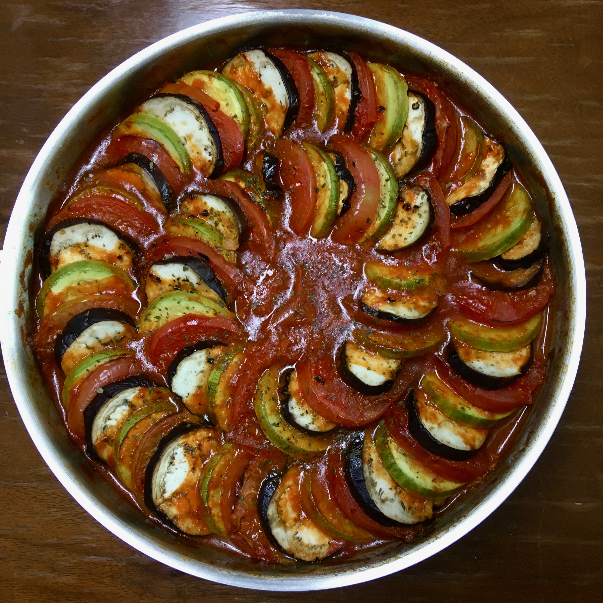

햇살과 소낙비를 촉촉히 머금은 제철채소의 앙상블, 라따뚜이
이런 재료들이 필요해요!
- 토마토 6개
- 가지 1개
- 애호박 1개
- 토마토소스 400g
- 양파 1/2개
- 올리브유 1큰술
- 다진마늘 1큰술
- 소금, 후추, 건파슬리, 생바질 약간
함께 만들어 볼까요?
- 토마토 5개, 가지, 애호박을 0.3cm 두께로 둥글게 채썰어 준비합니다.
- 오븐을 200도로 예열하고 1을 넣어 20분간 구워줍니다.
- 야채가 구워지는 동안 소스용 토마토 1개와 양파를 잘게 썰어 준비합니다.
- 달군 팬에 올리브유를 두르고 다진마늘을 넣어 볶아줍니다.
- 마늘 향이 나면 잘게 썬 토마토, 양파, 토마토소스를 넣어 끓여줍니다.
- 소스에 소금, 후추로 간을 합니다.
- 소스 위에 구운 야채를 원하는 순서대로 번갈아가며 돌려 담아줍니다.
- 야채가 마저 익을 때까지 끓인 후 파슬리와 바질을 올려 마무리합니다.